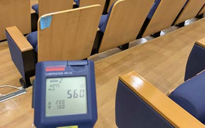
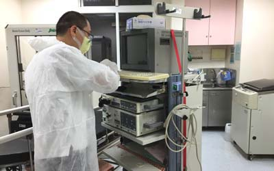
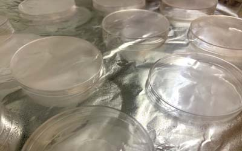

| 無機物是指有機物以外之各元素化合物, 一般分為氧化物.酸.鹼.鹽四大類. |
| 但無機化合物構成了地殼的大部分 |
| 無機物的定義:通常指不含碳元素的化合物，以金屬為主,但包括碳的氧化物、碳酸氫鹽、碳酸鹽、氰化物如水、食鹽、硫酸等，一氧化碳、二氧化碳、水也屬於無機物等，。 |
| 無機消毒藥劑,優點在於抗菌力長,不產生抗藥性,善用此材料在醫院上,可改善院內感染機率,近十年來已有增長趨勢,但目前還是以新型小醫院為主,主要是其主事者年輕者多,能接受更多外來新技術。 |
| 奈米銀因為其特殊的殺菌機制，不會有細菌產生抗藥性的問題。與直接利用銀離子殺菌比較，銀離子容易與體內的氯離子結合，產生氯化銀沉澱，進而誘發體內的免疫反應。 |
| 正確合理應用任何物質.產品.甚至到食物,都沒有絕對安全,水是無毒,但喝太多會水中毒,運動過量會造成傷害,就算物質無毒,但使用方法不對也會造成人體傷害,有關於安全合理使用方法需洽群專家為主 |

| 含氯消毒系列在微生物細菌病毒消毒中,最常見也最容易取得之消毒藥劑,漂白水(次氯酸鈉)獲次氯酸鈣,次氯酸等等都是,切記使用時不可使用熱水稀釋,以及和鹽酸一同使用,會引起氯中毒 |
| 二氧化氯:化學式ClO2它是氯系中無機物,其它多屬有機氯,其中二氧化氯其消毒能力在評比上可列為滅菌劑,其它同樣像是氯系列消毒劑,次氯酸鈉.次氯酸鈣,次氯酸水只能列為高.中消消毒劑, |
| 二氧化氯是一種非常活躍的化合物，在空氣中經光照馬上分解為氯氣及氧氣，近年來有些人將它用在噴霧加濕劑中,及空調上,這是不正確用法,因為 吸入二氧化氯可能會引起眼睛、鼻子、喉嚨及呼吸道黏膜的刺激,氣喘.肺氣腫...等等,更會降低自我免疫能力, |
| 雖然二氧化氯是良好消毒劑,但不是每一種地方都能夠使用,影響其作用包含菌種.時間含量.污垢物..等等,已感染防治而言,每種藥劑.方法都有優缺點,在適合環境下使用合理及安全方法消毒,消毒藥劑是殺細菌病菌不是殺人,這點必須了解,才不會對許多商品誤導,造成環境汙染.人體健康受損. |

| 以奈米銀離子抗菌能力,在大腸桿菌是奈米鋅15倍,在抗金黃色葡萄球桿菌也有7倍之強 | ||||||||||
|
||||||||||
|
||||||||||
| 光觸媒系:利用半導體材料奈米化,經光照反應表面產生氧化還原,使得病菌分解,而本身不產生變化,光觸媒材料有很多種,目前是以二氧化鈦為基礎,開發更多相關複合型材料以此材料在反應時相當等於在三萬度以上燃燒反應但其反應確和通常燃燒不同 |